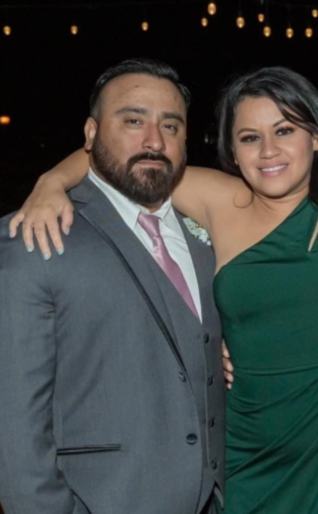
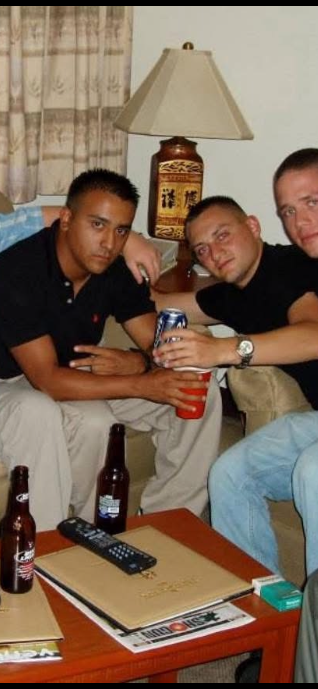
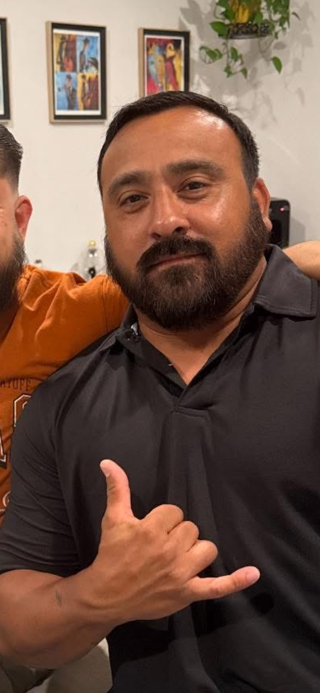

Financial Strategist
Sergio entered this line of work after experiencing personal loss and watching family and friends struggle financially because they were unprepared for the death of a loved one. That experience made clear how important it is to plan for the future — and today, he helps others put the right protections in place so their families never have to face the same hardships.
His military service, law enforcement experience, and commitment to community service have shaped the values he brings to this work every day: integrity, discipline, and a drive to help others build a more secure future.
Sergio's focus is helping individuals and families understand their options, prepare for the unexpected, protect what they've worked hard to build, and create a legacy for future generations. He doesn't feel called to serve just one group — his mission is simple: help anyone who's ready to prepare for the future, protect their loved ones, and build something that lasts.
Sergio is a father to an amazing daughter. Outside of work, he stays active with physical fitness and horseback riding, and makes time for family and Sunday BBQs.
Meet him at a BBQ, and you'll find a hardworking, family-oriented guy who enjoys being outdoors, taking on new projects, and bringing people together.



"Service taught me that protecting people isn't only about being there in a crisis — it's also about helping them prepare for the future and build a legacy that lasts."